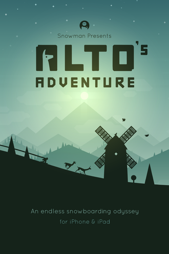

Alto's Adventure is a 2015 endless runner snowboarding video game
developed by Team Alto and published by Snowman (iOS) and Noodlecake
Studios (Android). The player-character automatically moves to the right
of the screen through procedurally generated landscapes. The player taps
the screen to jump and perform tricks (backflips), and works towards
goals, competitive high scores, and upgrades.
According to
review score aggregator Metacritic, the game received universal acclaim
from critics. Reviewers praised its art style and sense of atmosphere
but criticized its gameplay as unoriginal. Pocket Gamer awarded the game
their Gold Award. A sequel, Alto's Odyssey, was released in 2018.